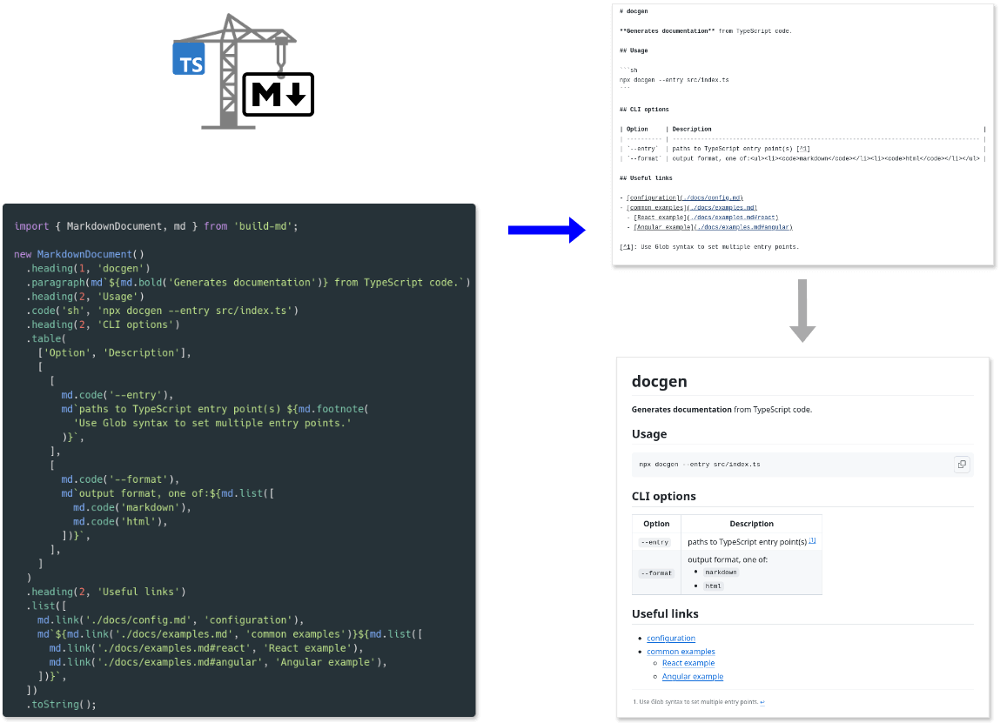

build-md
build-md


Comprehensive Markdown builder for JavaScript/TypeScript.

📖 Full documentation is hosted at https://matejchalk.github.io/build-md/.
Key features
- ⌨️ Its intuitive syntax makes it convenient for generating Markdown from JavaScript/TypeScript code.
- Builder pattern used for creating Markdown documents.
- Tagged template literal used for inline Markdown formatting and nesting Markdown blocks.
- 🖺 Has comprehensive support for many commonly used Markdown elements.
- All elements from Markdown's basic syntax are included.
- Also supports many elements from extended syntax (e.g. from GitHub Flavored Markdown).
- 📑 Enables logical nesting of Markdown elements and uses contextual rendering to ensure output will be rendered correctly.
- Blocks may contain inline elements or even other blocks (e.g. nested lists), inline elements may contain other inline elements, etc.
- Each element may be rendered as HTML instead of Markdown if needed. For example, block elements in Markdown tables will automatically render using equivalent HTML tags. And if a parent element is rendered as HTML, so will all its children.
- 🧮 Document builder enables writing conditional and iterative logic in a declarative way.
- Falsy values from regular JavaScript expressions are ignored.
- Special methods provided for adding multiple related elements conditionally or in a loop.
- Even for very complex dynamic documents, there should be no need to resort to imperative logic like
if/elsebranches orforloops. But if you prefer this coding style, then its supported in mutable mode (immutable is default).
- 🎀 Markdown output is well-formatted.
- Automatically inserts line breaks and indentation as appropriate. Even Markdown tables are aligned to be more readable.
- No need to run additional tools like Prettier to have nicely formatted Markdown.
Quickstart
Install build-md with your package manager in the usual way. E.g. to install as a dev dependency using NPM:
npm install -D build-md
Import the MarkdownDocument class, add some basic Markdown blocks and render as string:
import { MarkdownDocument } from 'build-md';
new MarkdownDocument()
.heading(1, 'Contributing')
.heading(2, 'Setup')
.paragraph('Install dependencies with:')
.code('sh', 'npm install')
.heading(2, 'Development')
.list([
'npm test - run unit tests with Vitest',
'npm run docs - generate documenation with TypeDoc',
])
.toString();
To add inline formatting, import the md tagged template literal:
import { MarkdownDocument, md } from 'build-md';
new MarkdownDocument()
// ...
.list([
md`${md.code('npm test')} - run unit tests with ${md.link(
'https://vitest.dev/',
'Vitest'
)}`,
md`${md.code('npm run docs')} - generate documenation with ${md.link(
'https://typedoc.org/',
'TypeDoc'
)}`,
])
.toString();
To see it in action, copy/paste this complete example into a docs.mjs file and run node docs.mjs to generate a CONTRIBUTING.md file:
import { MarkdownDocument, md } from 'build-md';
import { writeFile } from 'node:fs/promises';
const markdown = new MarkdownDocument()
.heading(1, 'Contributing')
.heading(2, 'Setup')
.paragraph('Install dependencies with:')
.code('sh', 'npm install')
.heading(2, 'Development')
.list([
md`${md.code('npm test')} - run unit tests with ${md.link(
'https://vitest.dev/',
'Vitest'
)}`,
md`${md.code('npm run docs')} - generate documenation with ${md.link(
'https://typedoc.org/',
'TypeDoc'
)}`,
])
.toString();
await writeFile('CONTRIBUTING.md', markdown);
List of supported Markdown elements
| Element | Usage | Example | ||||||
|---|---|---|---|---|---|---|---|---|
| Bold | md.bold(text) |
important text | ||||||
| Italic | md.italic(text) |
emphasized text | ||||||
| Link | md.link(href, text?, title?) |
link | ||||||
| Image | md.image(src, alt) |
|||||||
| Code | md.code(text) |
source_code |
||||||
| Strikethrough [^1] | md.strikethrough(text) |
|||||||
| Footnote [^1] | md.footnote(text, label?) |
[^2] | ||||||
| Heading | md.heading(level, text) |
Title |
||||||
| Paragraph | md.paragraph(text) |
long text |
||||||
| Code block | md.codeBlock(lang?, text) |
|
||||||
| Horizontal rule | md.rule() |
|||||||
| Blockquote | md.quote(text) |
interesting quote |
||||||
| Unordered list | md.list(items) |
|
||||||
| Ordered list | md.list('ordered', items) |
|
||||||
| Task list [^1] | md.list('task', items) |
|
||||||
| Table [^1] | md.table(columns, rows) |
|
||||||
| Details [^3] | md.details(summary?, text) |
expandable content |
[^1]: Not part of basic Markdown syntax, but supported by some Markdown extensions like GFM. [^2]: Footnotes render a label in place of insertion, as well as appending a block to the end of the document with the content. [^3]: Always rendered as HTML.